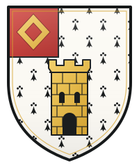

Accueil / La mairie
Votre mairie, à votre écoute
Le secrétariat vous accueille deux jours par semaine. Le reste du temps, laissez un message : nous vous rappelons.
Accueil & horaires
Horaires du secrétariat
…
Le mot du maire
« Chères Brigittoises, chers Brigittois, bienvenue sur le nouveau site de notre commune. Vous y trouverez toutes les informations utiles au quotidien, les nouvelles du bourg et l'agenda de nos associations. Bonne visite ! »
, maire de Sainte-Brigitte
Le conseil municipal
Le conseil municipal a été élu le 20 septembre 2026, avec Anne Le Borgne pour maire. La liste complète des élus sera publiée ici prochainement.
Comptes rendus des conseils
Les comptes rendus des séances du conseil municipal sont affichés en mairie et consultables au secrétariat aux heures d'ouverture.
Les comptes rendus en PDF seront ajoutés ici.
Les armoiries de la commune

« D'hermine à une tour d'or ouverte, ajourée et maçonnée de sable, au franc-canton de gueules chargé d'une mâcle d'or. »
Les hermines évoquent la Bretagne. La tour d'or rappelle le château des Salles et le patrimoine des Forges. La mâcle, un losange évidé, est un meuble emblématique de la région, hérité des armes de la famille de Rohan.
Dessin redessiné en version numérique pour le site, d'après le blasonnement officiel.
Intercommunalité
Pontivy Communauté
Sainte-Brigitte fait partie de Pontivy Communauté, qui gère notamment les déchets, l'urbanisme intercommunal (PLUi), l'eau et l'assainissement.
pontivy-communaute.bzhAide à domicile — SADI
Portage de repas, ménage, courses, aide au lever et au coucher… Le Service d'Aide à Domicile Intercommunal est basé à Cléguérec.